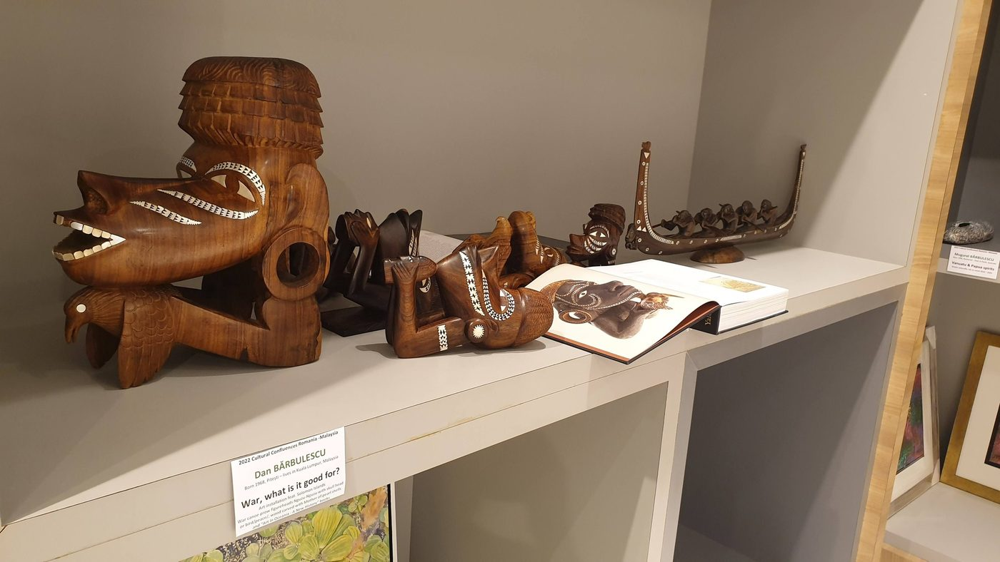
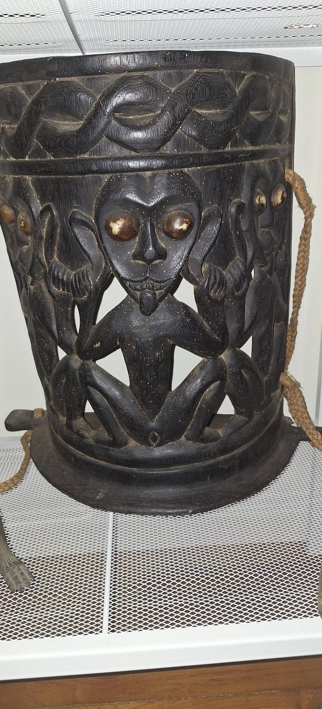
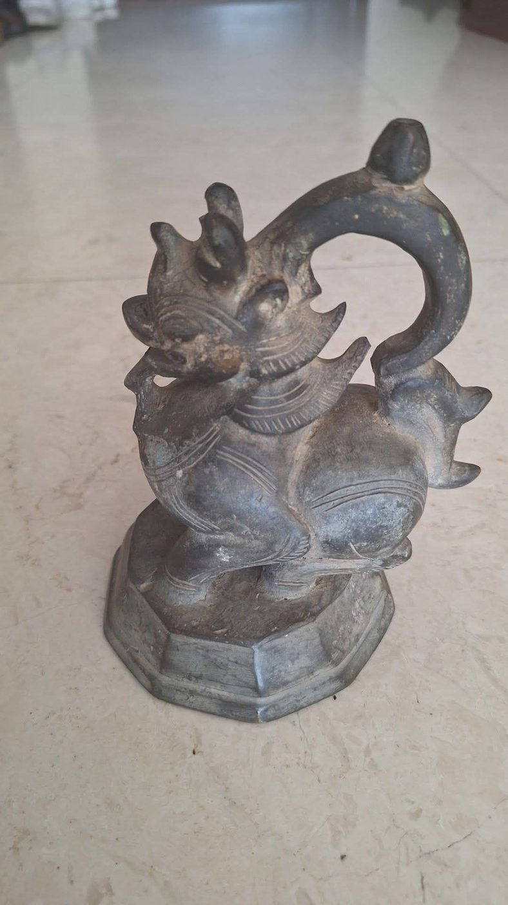
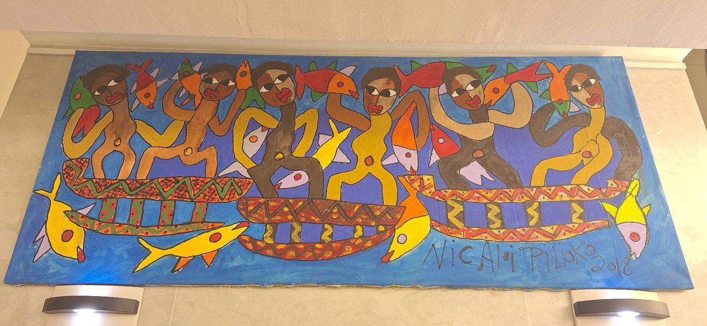
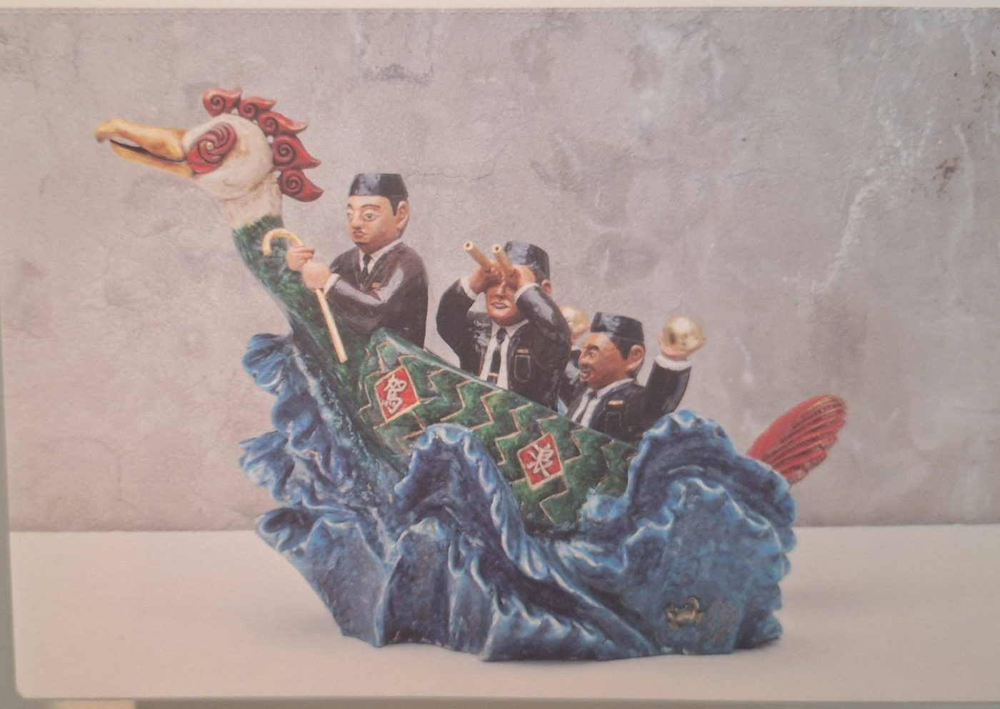

Australia
Australia
Aboriginal Birds in SpacePăsări aborigene în spațiu
A preface to the installation: Seven Sisters Dreaming, Arnhem Land poles, Brâncuși's ascent, and André Breton's wall of constellations.O prefață la instalație: Visul Celor Șapte Surori, stâlpii din Arnhem Land, ascensiunea lui Brâncuși și zidul de constelații al lui André Breton.
→
Solomon IslandsInsulele SolomonThe Spirit of the TomokoSpiritul canoei Tomoko
Maritime ritual and cultural resilience: from prow guardian and headhunting economy to national coinage and the Peace Canoe.Ritual maritim și reziliență culturală: de la gardianul provei și economia vânătorii de capete la moneda națională și Canoea Păcii.
→ Malaysia
Malaysia
Moyang Siamang — The Primate Ancestor SpiritMoyang Siamang — spiritul-strămoș primat
A carved cosmology at the edge of three worlds: the sacred primate read through Orang Asli, Chinese (Sun Wukong), and Indian (Hanuman) eyes.O cosmologie sculptată la hotarul a trei lumi: primatul sacru citit prin ochii Orang Asli, chinezi (Sun Wukong) și indieni (Hanuman).
→
BorneoSpiritual Armor: The Sacred PapotArmură spirituală: sacrul papot
How a Dayak baby carrier functions as a portable sacred centre, protecting an infant through both jungle and threshold.Cum funcționează un port-bebe dayak drept centru sacru portabil, ocrotind copilul deopotrivă prin junglă și prin prag.
→
MyanmarThe Sacralization of MeasureSacralizarea măsurii
Burmese bronze weights — Chinthe, elephant, and fish — unite Heaven, Earth, and Underworld in the tools of daily trade.Greutăți birmaneze din bronz — chinthe, elefant și pește — unesc Cerul, Pământul și Lumea de Jos în uneltele comerțului zilnic.
→
Vanuatu & FijiVanuatu și FijiThe "Picasso of the Pacific"„Picasso al Pacificului”
Aloï Pilioko bridges Polynesian tradition and modern expressionism in the collection's most vivid colour field.Aloï Pilioko îmbină tradiția polineziană și expresionismul modern în cel mai viu câmp de culoare al colecției.
→ Malaysia
Malaysia
Dreaming the Sacred: Eliade & the Masks of MalaysiaVisând sacrul: Eliade și măștile Malaysiei
How Mah Meri shamanic ritual shaped Mircea Eliade's account of the shaman as psychopomp.Cum a modelat ritualul șamanic Mah Meri relatarea lui Mircea Eliade despre șaman ca psihopomp.
→ Sumatra
Sumatra
The Power of the VesselPuterea vasului
Batak medicine containers, from empty horn to complete cosmogram: the naga morsarang of the Toba Batak.Recipiente-medicament batak, de la cornul gol la cosmogramă completă: naga morsarang a poporului Toba Batak.
→ Papua New GuineaPapua Noua Guinee
Papua New GuineaPapua Noua Guinee
Living AncestorsStrămoși vii
The Asaro Mudmen legend, and the Eastern Highlands spirit mask as an active, sacred portal.Legenda Oamenilor de Noroi Asaro și masca-spirit din Podișul de Est ca portal sacru, activ.
→
MalaysiaThe Raja Bomoh and the Great BirdRaja Bomoh și Pasărea cea Mare
A Malay shaman, a missing aeroplane, and Hoo Fan Chon’s contemporary sculpture that deifies the bomoh.Un șaman malaez, un avion dispărut și sculptura contemporană a lui Hoo Fan Chon care îl divinizează pe bomoh.
→